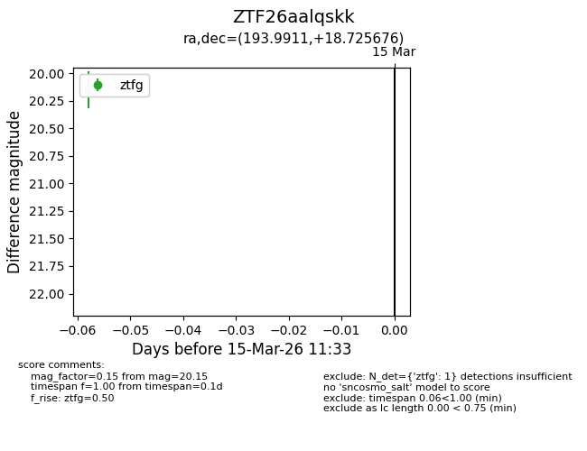
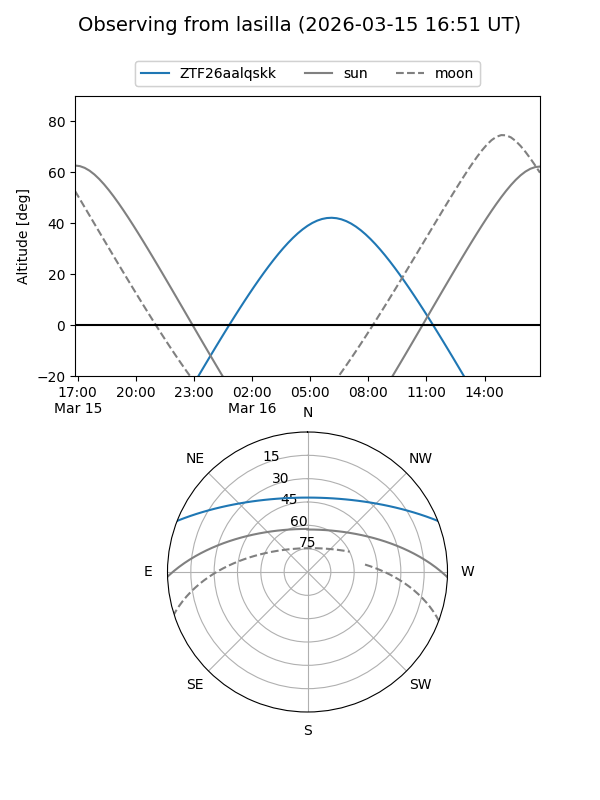
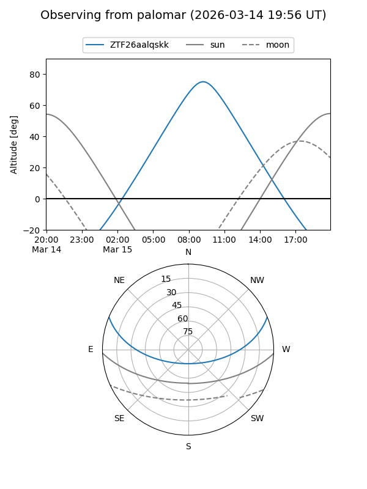

ZTF26aalqskk
Target ZTF26aalqskk at 2026-03-15 11:35
Aliases and brokers:
FINK: link
Lasair: link
ALeRCE: link
alt names
ZTF26aalqskk (ztf,fink_ztf)
Coordinates:
equatorial (ra, dec) = 193.9911,+18.72568
equatorial (HMS+DMS) = 12:55:57.86,+18:43:32.43
galactic (l, b) = (310.2299,+81.53321)
Flags:
Photometry:
last ztfg=20.15
1 ztfg detections
Lightcurve

Visibility


Additional plots